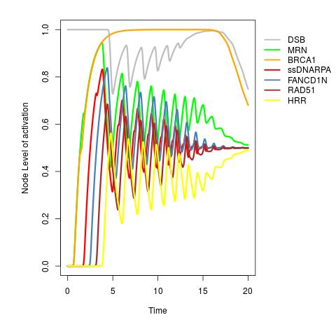
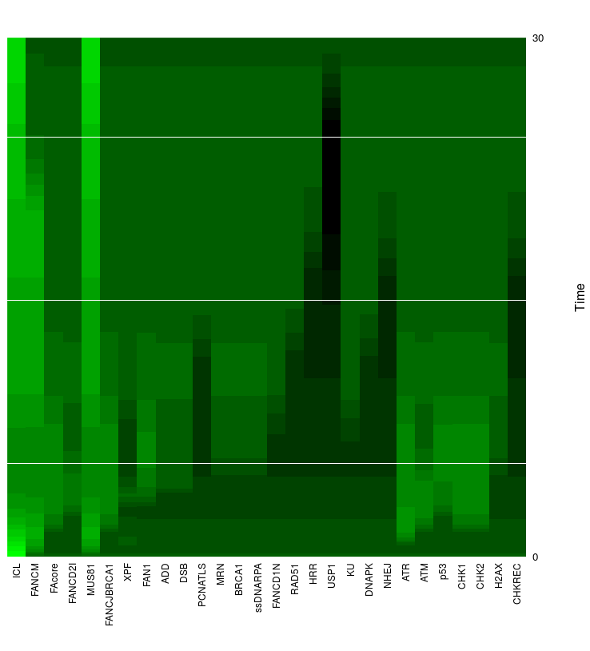

To show the application of SQUAD to interpolate BRN models here we transform the BRN model defined by Alfredo Rodríguez et al, 2012 in this study. Briely, FA/BRCA pathway regulates DNA repair checkpoints and in normal circunstances prevents the ocurrence of chromosomal aberrations. First, we inspect the number of attractors in synchronous and asynchronous updating schemes. FA/BRCA is concerned with cycles of damage/repair. Synchronous modeling it is frequently more convenient in cases where cycles are looked a priori.
> ## loading network
> net <- loadNetwork("FA_for_BoolNet.txt")
>
> ## getting attractors in synchronous updating
> getAttractors(net,type = "synchronous",method = "sat.exhaustive")
Attractor 1 is a simple attractor consisting of 2 state(s):
|--<---------------------------|
V |
0000000000000000000000000000 |
0000000000000000000000000001 |
V |
|-->---------------------------|
...
In the next code a search for fixed points steady states is performed.
> getAttractors.sq(net,type = "asynchronous", method = "heuristic")
list()
Warning message:
In heuristicSSS(net) : OK! But no fixed points found!
The output is a void list since no fixed points attractors are presented in asynchronous updating. In this case, this is a expected result since this is a model of DNA damage/repair checkpoints cycles.
In the Boolean model double strand breaks injuries causes a sequential uparegulation of MRN, BRC1, ssDNARPA, FANCD1N, RAD51, and HRR. After this pathway is executed the molecular machinery is able to sense and repair DNA damage and then it returns to a background state.
The following lines shows how the model can be easily transformed to a continuous interpolation using SQUAD R package.
> initialState <- generateState(net, specs = c("DSB"=1))
> net.sq <- asContinuous(net)
> squad(net.sq,initialState = initialState,timePeriod = 20,
> indexes = c(10,12:17))

The parameter index is used to pass the indexes of the nodes for wanted to be plotted. As can be seen from the figure, the expected genes are activated in a sequential manner and at later stages DSB return to a medium-low level.
Finally, we simulate persistent inter chromosomal link ICL by keeping its value constant = 1.
> initialState <- rep(0,length(net$genes))
> squad(net.sq,initialState = initialState,timePeriod = 30,fixed = c("ICL"=1),plot = "heatmap")

From the heatmap it can be seen that in this context some nodes as MUS81 endonuclease did not return to background low levels.
This analysis shows how some characteristics are conserved in SQUAD formalism and some other are not. Also, shows some posible caveats when interpolating BRN models.